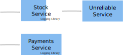
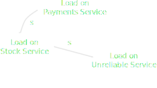
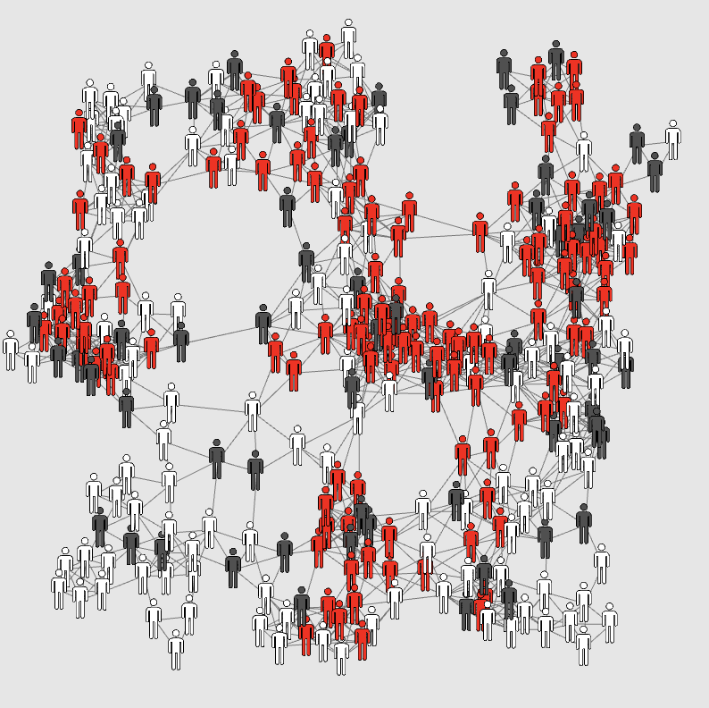

If only we could predict the future...
Chapter 1
Connections
Connascence
Name
Type
Meaning
Position
Algorithm
Type
Meaning
Position
Algorithm
Execution
Timing
Value
Identity
Timing
Value
Identity
Shared Mutable State
As a code base grows large, potential interactions grow exponentially, and it quickly becomes impossible to test every interaction, or even predict which interactions might cause defects.Mary Poppendieck
A simple service
Split into two
What could go wrong?
Hidden connection
Chapter 2
Interactions and Loops
An extra dependency
It’s easy to write bug-free code in isolation; most bugs are caused by the way one piece of correct software interacts with another piece of correct software.Mary Poppendieck
To successfully minimize the consequences of encountering inevitable failure.Netflix resilience engineering
Systems perspective

Deploying to production

Release cycle
Release cycle
Quality cycle
Quality cycle
Systems Thinking
Tools
Causal loop diagramsFlows and Stocks
Archetypes
Concepts
Events
Patterns and Behaviour
Structures
Mental models
Narrative structures
The Game of Life
You have a grid of cells which can be alive or dead.
Any alive cell touching less than two or more than three live neighbours dies.
Any dead cell touching exactly three live neighbours becomes alive.
Otherwise stay the same.

Complexity Explorables
Complexity2 everywhere


Complex2 Neural Dynamics
Chapter 3
Adaptive agents
Complex adaptive systems

Exaptation
Unintended consequences...
Chapter 4
Human agents
Socio-complexc systems
Socio-complexc systems
Simulation? Little dots on a screen are just one method of testing a set of assumptions. If I change the weather conditions [or] there is suddenly a loud noise or a bad smell, are your assumptions still true? ... You can’t really reduce an individual’s mind-set to an algorithm..Professor Keith Still
When a measure becomes a target, it ceases to be a good measure.Charles Goodhart
Organisation
A system is not a tree.Kevlin Henney
Individuals and interactions
over processes and tools
Real Organisation
Self-organisation
Netflix again...
Netflix as a socio-technical system is formed from the interaction of people and software. ... Unforseen interactions are common and operational surprises arise from perfect storms of events.
Where's the master plan?
Chapter 5
Navigating uncertainty
How do individuals and organizations win in an uncertain environment?
John Boyd's OODA loop
Simon Wardley's PST
Pioneer
Novelty and experiment
Settler
Refine and build
Town Planner
Improve and industrialise
Kent Beck's
Software Development Triathlon (3X)
Explore
Expand
Extract
Cynefin Framework

Anecdote Circles
Gather personal anecdotes
Synthesise
Consider impacts
Decide actions/interventions
Epilogue
Complexity as complicated
Complexity as unanticipated
Complexity as unpredictable
Complexity as opportunity
Uncertainty is an uncomfortable position. But certainty is an absurd one.Voltaire